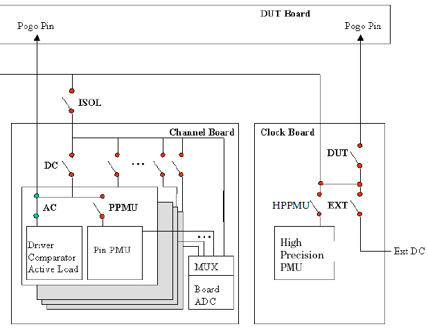

Control of the Pin Electronics Relays and the Relay Switching Method
On the V93000 Smart Scale systems, each test system channel of the channel boards includes an AC relay and a PPMU relay. These are used to connect a DUT pin to the AC and DC resources of the test system.
Note The HPPMU is not supported with SmarTest 7.10.
The additional relays shown below are therefor not in use.
The relays are shown in the figure below. You can control them using the command RLYC, RLYC? - (ReLaY Control).

The AC relay links the DUT pin to the test system channel previously defined by the command DFPN, DFPN? - (DeFine Pin Name). This relay must be closed if vectors are to be sent to or received from the DUT.
The PPMU relay links the DUT pin to the PPMU.